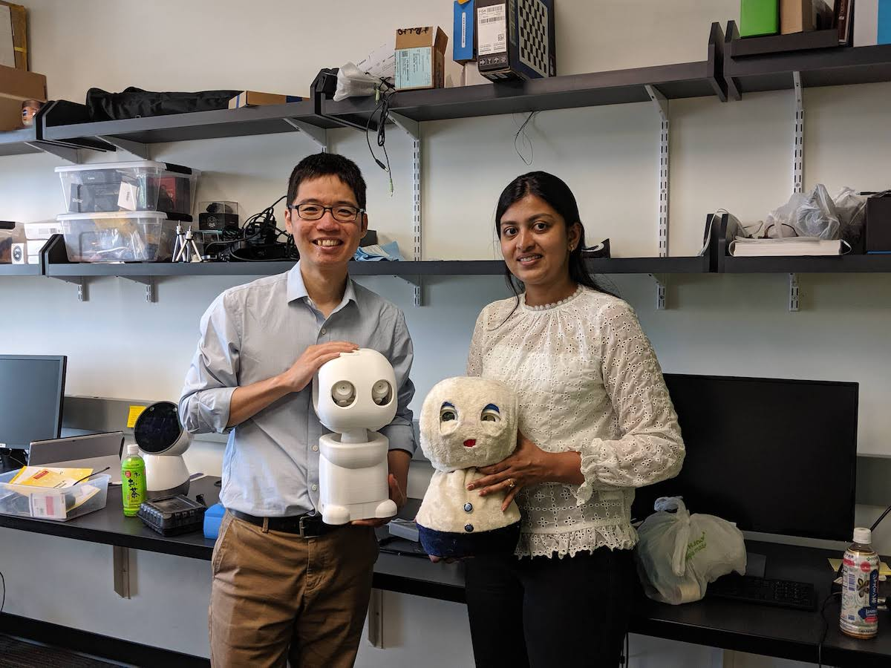

Lab News
Amrita Krishnaraj to join Van Robotics
Amrita's Master's research was broadly on designing social robots for mental health care and particularly focused on haptics-based affective communication. She is joining Van Robotics to work on social robots for personalized education. All the best, Amrita!
June 2019
Gopika Ajaykumar spoke to girl scouts at the Maryland Science Center
Gopika presented our research on Human-Robot Interaction and our recent work on making robot programming more accessible for users to girl scouts at the Maryland Science Center. It was great to engage young learners interested in robotics and interactive technologies!
June 2019
Equipment Award: Quori Robot
Our team, in collaboration with Greg Hager and John Krakauer, will receive a Quori robot to investigate how a mobile social robot may be used to support healthy aging.
APL Contract: Human-Robot Co-Navigation
We recently started a collaboration project with APL to investigate Human-Robot Co-Navigation. We will share our results soon!
Paper to appear at IUI’19
Our paper entitled “PATI: A Projection-based Augmented Table-Top Interface for Robot Programming” is accepted to publish at IUI’19. This paper, led by Yuxiang Gao, describes a novel interface for intuitive end-user robot programming. The paper is now available here.
Dr. Chien-Ming Huang is named the John C. Malone Assistant Professor
Lab director Dr. Chien-Ming Huang is named the John C. Malone Assistant Professor. This professorship is generously supported by Dr. John C. Malone to advance the frontiers of engineering in healthcare. Congratulations!
Gopika Ajaykumar received research fellowship recognition
Gopika Ajaykumar received the NSF Graduate Research Fellowship (2018–2021) and the Howard and Jacqueline Chertkof Endowed Fellowship (2018–2019)! Congratulations!
NSF Award: Human-Machine Teaming for Medical Decision Making
We received an NSF award to study human-machine cognitive teaming for medical decision making. This project is a collaboration with Suchi Saria (PI), Martin Makary, William Padula, and David Newman-Toker. Here is the news announcement.
Article to appear on ACM Transactions on Interactive Intelligent Systems
Our work on “Toward Effective Robot-Child Tutoring: Intrinsic Motivation, Behavioral Intervention, and Learning Outcomes” will soon be available in ACM Transactions on Interactive Intelligent Systems.
Science Robotics
Our recent work on “improving social skills in children with ASD using a long-term, in-home social robot” is now on Science Robotics! This work demonstrates the potential of social robots on autism research.
Paper accepted to HRI’18
Our recent work on robot-child tutoring was accepted to HRI’18. This work explores how a tutoring robot can provide meta-cognitive support, particularly thinking aloud during problem solving, to children and how such support may shape learning outcomes.